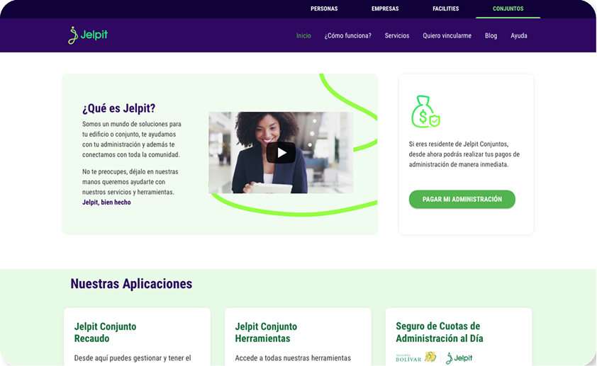
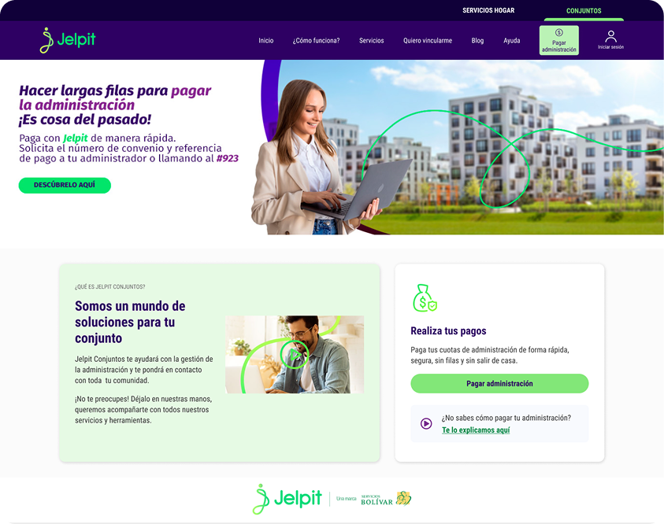
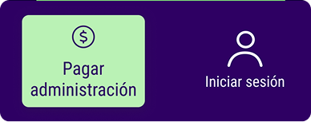
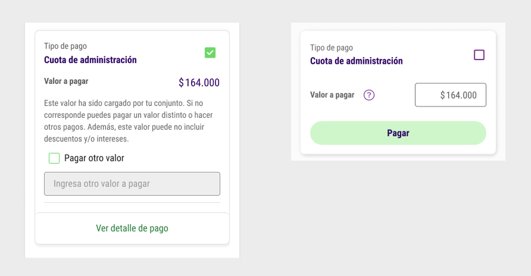
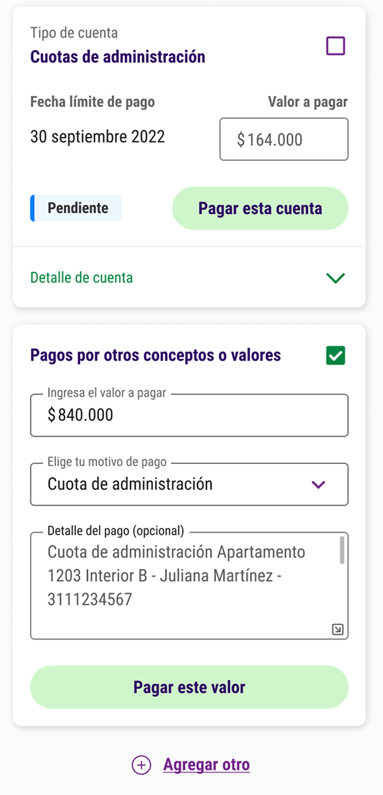
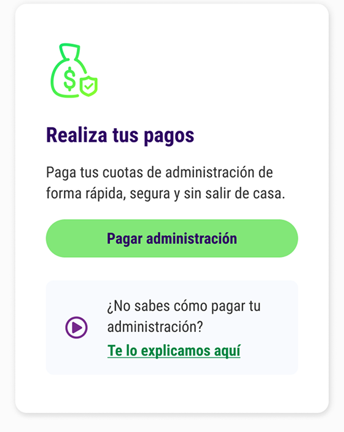
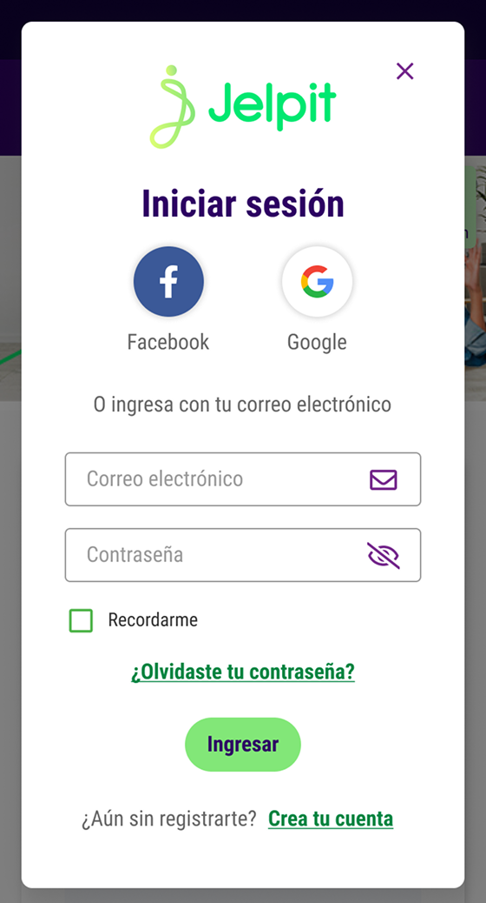
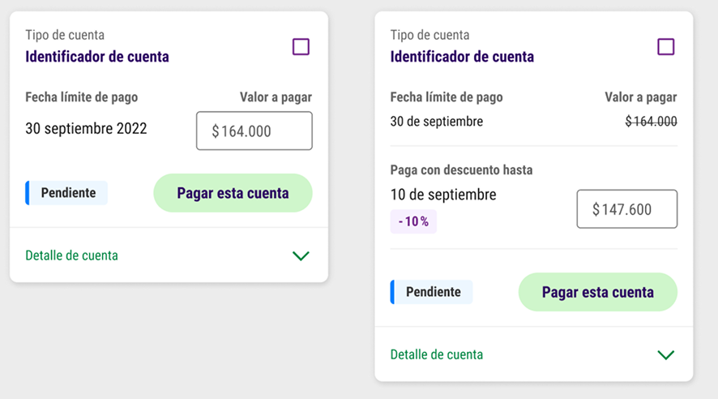
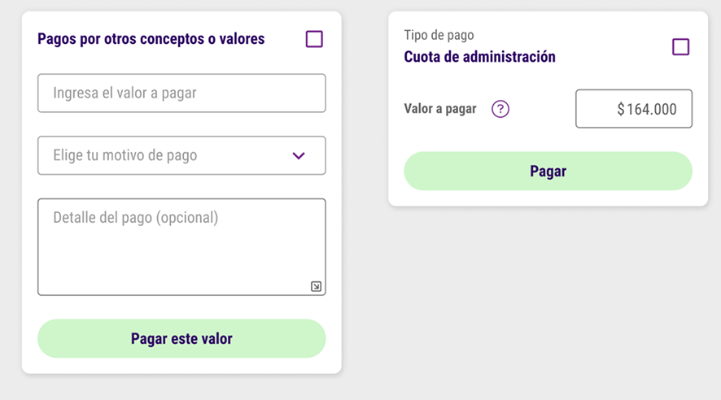

Optimización del flujo de pago en Jelpit Conjuntos
Cómo un proceso de mejora continua multiplicó por 7.5 las transacciones digitales
Rediseñamos el flujo de pago de la plataforma de administración de propiedad horizontal Jelpit Conjuntos para reducir fricciones, mejorar la experiencia de usuario y aumentar la transaccionalidad.
Resultados medibles
Uso del producto
x 7.5
Transacciones mensuales: 80K a 600K en 2 años
Reducción de fricción
- 22 %
Clics fallidos: 40% a 18% en 3 meses
Satisfacción del cliente
+ 100 pts
NPS: −30 a +70 en 6 meses
Adopción organizacional
Metodología de toma de decisiones implementada a nivel compañía
Reconocimiento a la innovación
Premio a la innovación Grupo Bolívar
Qué estaba pasando
Los canales digitales presentaban baja transaccionalidad, altos niveles de fricción durante el pago —reflejados en quejas y abandono— y limitada visibilidad de datos para identificar y priorizar oportunidades de mejora. Esto generaba además alto desgaste en los equipos de servicio al cliente, que debían resolver manualmente problemas del flujo.
Qué hicimos
Este proyecto fue un proceso de mejora continua — no un rediseño de una sola vez. Cada cambio se basó en evidencia y se midió su impacto antes de seguir iterando:
- Análisis de datos de uso, abandonos y métricas de transaccionalidad
- Investigación de campo con usuarios y administradores
- Sesiones de entendimiento con stakeholders de negocio, comercial y tecnología
- Consolidación de hallazgos en Looker Studio para toma de decisiones
- Mejora de copys y mensajes del sistema
- Ajustes visuales y de jerarquía y ampliación de áreas activas en componentes
- Mejoras técnicas para reducir errores en el flujo
- Estandarización de componentes dentro del sistema de diseño
- Seguimiento del impacto de cada cambio en producción
- Activación organizacional e implementación de un proceso permanente de optimización
Cómo tomamos decisiones
Para identificar fricciones y priorizar mejoras se combinaron investigación cualitativa y análisis de datos, consolidados en un sistema de toma de decisiones que permitió actuar con evidencia en cada iteración.
- Investigación: entrevistas y análisis de comportamiento con usuarios y administradores para identificar focos de dolor y fricción en el flujo
- Analítica: Google Analytics, mapas de calor, NPS, focus groups y Microsoft Clarity
- Consolidación: dashboard en Looker Studio para centralizar hallazgos y facilitar la priorización
- Activación organizacional: alineación de equipos de negocio, tecnología y comercial para ejecutar mejoras de forma coordinada
Mi rol
Product Designer responsable del proceso completo de mejora continua — desde la investigación y el análisis de datos hasta el diseño, el UX Writing y la ejecución de mejoras directamente en producción. Trabajé de forma transversal con equipos de negocio, tecnología y comercial, y fui el responsable de consolidar los hallazgos en un sistema de toma de decisiones que permitió priorizar y medir el impacto de cada cambio.
La solución
Principales mejoras implementadas
A partir de los hallazgos de investigación y analítica, se implementaron mejoras continuas en el flujo de pago.
Pantalla de inicio del flujo de pago
Antes

Después

Mejora de mensajes del sistema

La acción más utilizada es Pagar administración, por lo que se le dio mayor relevancia dentro de la interfaz mediante un botón claro y visible.
Además, se cambió "Ingresar" por "Iniciar sesión", ya que el término anterior se confundía con otro concepto utilizado por los administradores en su comunicación con los residentes.

Se simplificó la presentación del valor y nombre del pago, eliminando información innecesaria para reducir la carga cognitiva.
Al mismo tiempo, se mantuvo la posibilidad de mostrar el valor sugerido a pagar en casos donde los administradores no habían actualizado la información.
Optimización de áreas activas en componentes
Ajustes en zonas clicables para reducir clics fallidos y rage clicks detectados en analítica y mapas de calor.
Cards de cuotas, campos activos y botones
Ampliación de áreas activas en tarjetas, campos interactivos y botones.

Componentes de interfaz
Mejora de botones y enlaces para facilitar la interacción y evitar errores.

Card de pagos
Ajustes en íconos, inputs y botones para aumentar precisión y usabilidad.

Evolución de componentes del sistema de diseño
Se diseñaron y estandarizaron variaciones del componente para responder a distintos casos de uso dentro del flujo de pago, permitiendo representar estados, valores y acciones de manera consistente en producción.

